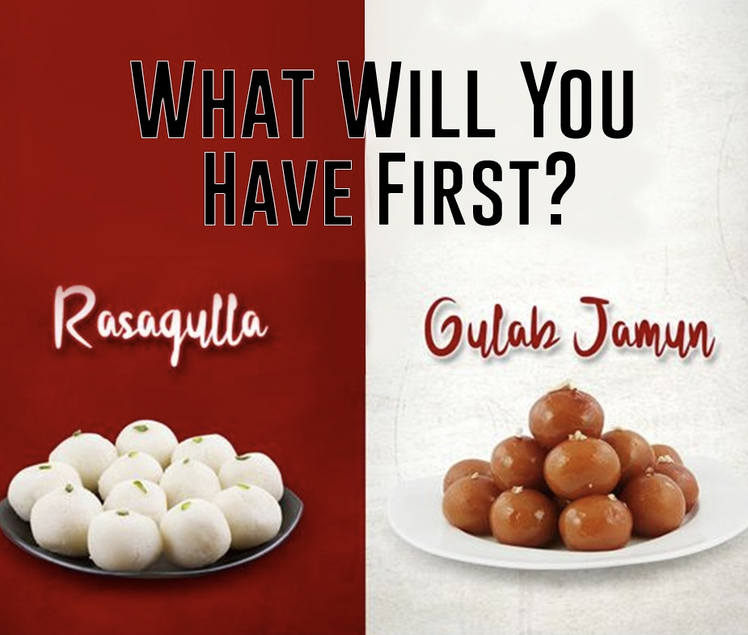

Makai Shorba₹300Very creamy sweet corn soup with desi notes..
Tomato Soup.₹300A soup with tomatoes as the primary ingredient.
Lemon,Corriander Soup.₹270Light and nutritious soup will make you feel refreshed.
Mix Veg Clear Soup.₹280A transparent liquid soup, prepared without any dairy products and spices except pepper and salt..
Hot And Sour Soup.₹250A spicy and hot soup made with mixed fresh vegetables, mushrooms, spices and soy sauce.
Chicken Manchow Soup.₹200A dark brown Chinese soup. Chicken, mushrooms, carrots and other veggies simmered in mild flavors..
Special Veg Soup.₹350Loaded with healthy Veggies and our secret masala.
SpeciaL Non Veg Soup.₹400Loaded with spicy chicken and our secret masala
FOOD MENU
Main Course
Puran Poli With Aamras₹1000A traditional sweet dish made using wheat flour dough stuffed with a sweet lentil filling from Maharashtra.
Butter Chicken.₹1200A classic Indian dish that's made by simmering marinated & grilled chicken from Punjab.
Chettinad Chicken Curry.₹1100
A fiery hot, delicious, and aromatic dish that hails from the Chettinad region in Tamil Nadu, South India.
Litti Chokha₹1100
A complete meal that originated from the Bhojpuri region of the Indian states of Bihar and Uttar Pradesh.
Hyderabadi biryani.₹800Chicken Biryani is an aromatic, mouth watering and authentic Indian dish with succulent chicken in layers of fluffy rice, fragrant spices.
Tadka Dal.₹1000Spicy cooked lentils which are tempered with oil or ghee fried spices & herbs.

INDIAN SWEETS MENU
Sweets
Kaju Katli .₹70Indian delicacy prepared with cashew nuts, sugar, cardamom powder, and ghee butter.
Barfi.₹60Milk-based sweet from the Indian subcontinent with a fudge-like consistency.
GulabJamun.₹30A milk-solid-based sweet made mainly from milk solids, traditionally from 'khoya', which is milk reduced to the consistency of a soft dough.
Rasgulla.₹30Made from ball-shaped dumplings of chhena dough, cooked in light sugar syrup made of sugar.
RasMalai.₹40Flattened balls of chhena soaked in malai (a type of clotted cream) flavoured with cardamom.
Modak.₹20Indian sweet dumpling believed to have originated in the state of Maharashtra.
Soan Papdi.₹100Cube-shaped or served as flakes, and has a crisp and flaky texture.